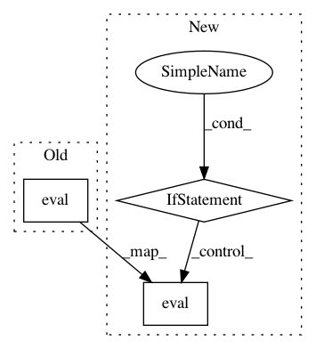

ce2ff4b47c40fbb29ed297965a8ec607d59b116d,tf_unet/unet.py,Trainer,train,#Trainer#,374
Before Change
avg_gradients[i] = (avg_gradients[i] * (1.0 - (1.0 / (step+1)))) + (gradients[i] / (step+1))
norm_gradients = [np.linalg.norm(gradient) for gradient in avg_gradients]
self.norm_gradients_node.assign(norm_gradients).eval()
if step % display_step == 0:
self.output_minibatch_stats(sess, summary_writer, step, batch_x, util.crop_to_shape(batch_y, pred_shape))
After Change
self.net.y: util.crop_to_shape(batch_y, pred_shape),
self.net.keep_prob: dropout})
if self.net.summaries and self.norm_grads:
avg_gradients = _update_avg_gradients(avg_gradients, gradients, step)
norm_gradients = [np.linalg.norm(gradient) for gradient in avg_gradients]
self.norm_gradients_node.assign(norm_gradients).eval()
if step % display_step == 0:
self.output_minibatch_stats(sess, summary_writer, step, batch_x, util.crop_to_shape(batch_y, pred_shape))
total_loss += loss
In pattern: SUPERPATTERN
Frequency: 5
Non-data size: 3
Instances
Project Name: jakeret/tf_unet
Commit Name: ce2ff4b47c40fbb29ed297965a8ec607d59b116d
Time: 2017-09-21
Author: joel.akeret@gmail.com
File Name: tf_unet/unet.py
Class Name: Trainer
Method Name: train
Project Name: Cadene/bootstrap.pytorch
Commit Name: 5596783838477f6e4c099d94a715f18fcc8a1687
Time: 2018-07-24
Author: rcadene@lnode-au16-28.cm.cluster
File Name: bootstrap/run.py
Class Name:
Method Name: run
Project Name: anishathalye/neural-style
Commit Name: 4ff41aad9a23f4c5160648bb930606175cd932ed
Time: 2015-12-03
Author: me@anishathalye.com
File Name: stylize.py
Class Name:
Method Name: stylize
Project Name: mindorii/kws
Commit Name: f2105ccdf8e18f2270c45068c6d1bec7338b3825
Time: 2017-12-15
Author: awni.hannun@gmail.com
File Name: models/streaming_model.py
Class Name: StreamingSpeechModel
Method Name: initial_state
Project Name: masa-su/pixyz
Commit Name: c9a2beba5cfed8be10fff48493d740076b9388f1
Time: 2019-10-23
Author: kaneko@weblab.t.u-tokyo.ac.jp
File Name: pixyz/losses/losses.py
Class Name: Expectation
Method Name: _get_eval